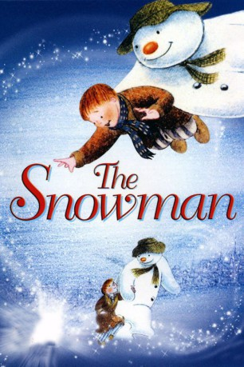

#5120 Der Schneemann
Alternativ: Snowman, The (Originaltitel)
Auszeichnungen: für 1 Oscars nominiert 1 BAFTA-Awards gewonnen
 
 IMDB-Wertung: 8.2 / 10
IMDB-Wertung: 8.2 / 10  Metascore: 0
Metascore: 0 
An einem herrlichen Wintertag baut ein Junge vor dem Haus einen großen Schneemann. Um sein Werk noch einmal zu bewundern, schleicht er sich in der Nacht heimlich in den Garten. Es ist Heiligabend, und plötzlich erwacht der Schneemann auf magische Weise zum Leben. Gemeinsam gehen die beiden auf eine märchenhafte Reise und erleben spannende Abenteuer...
Jahr: 1982
Dauer: 26 Minuten
FSK: 0
Land: England Studio: Suomen Elokuvakontakti RyTonspuren: DD2.0 - ,
Untertitel:
Auflösung: 1080p (1920x1080) Größe: 1157 MB
Genre: Abenteuer, Fantasy, Animation/Trick, Familie, Kurzfilm, Weihnachten
Regisseur: Dianne Jackson, Jimmy T. Murakami
Drehbuch: Justin Zackham
Soundtrack:
Darsteller:
Datei: X:\Kinder Filme (N-Z)\Schneemann, Der (1982, FSK0, 1920x1080).mkv seit 23.12.2016
Festplatte: Kinder-Filme+Trick
 Es gibt insgesamt 87 Filme in der Gruppe 'Kinder Filme (N-Z)'
Es gibt insgesamt 87 Filme in der Gruppe 'Kinder Filme (N-Z)'